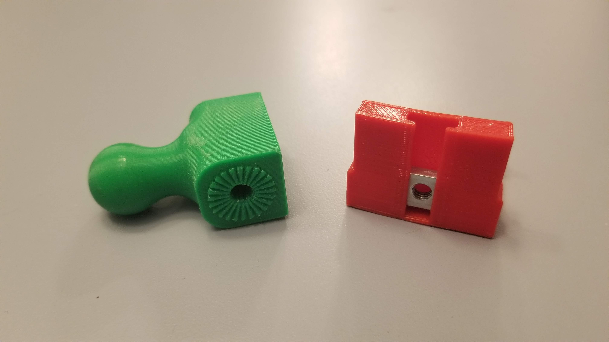
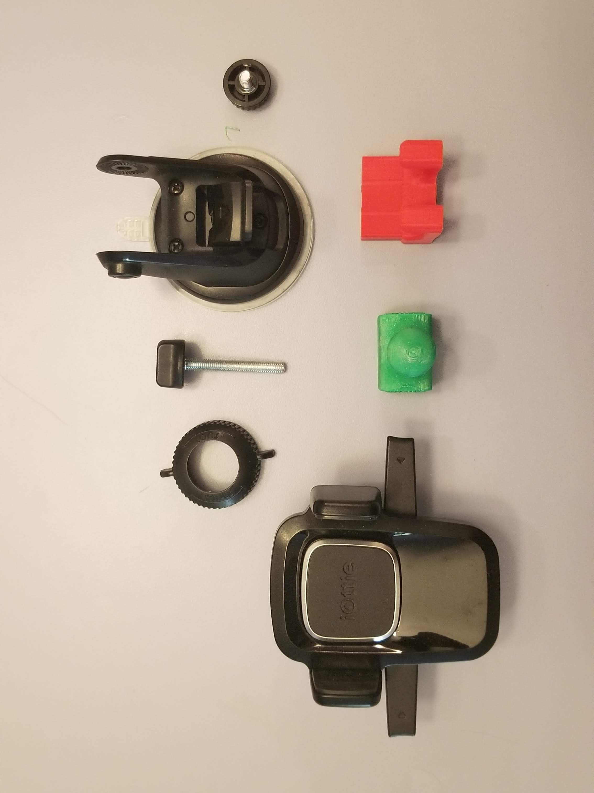
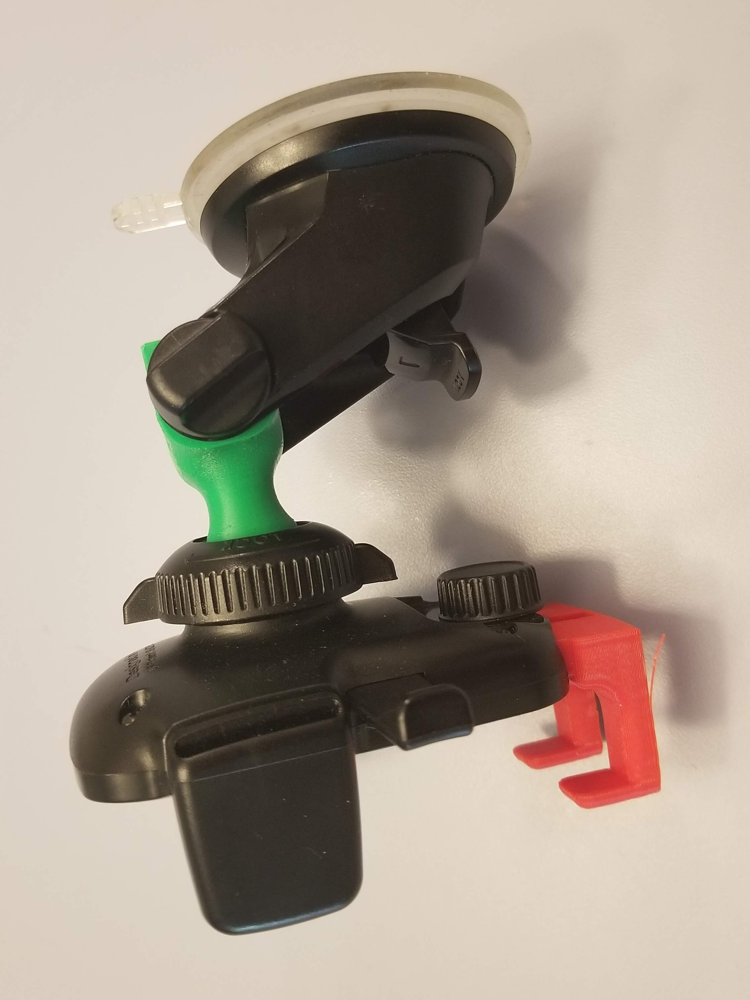
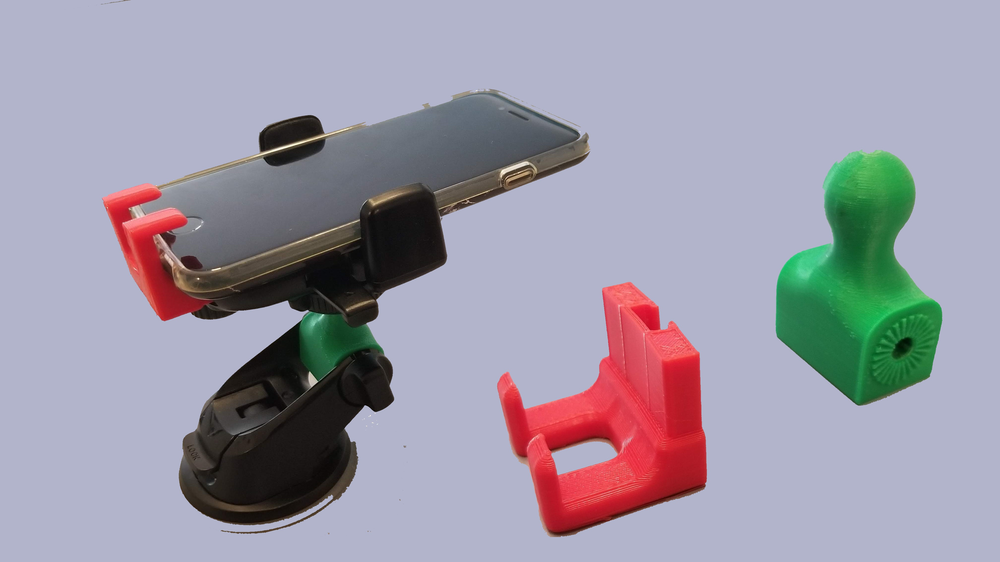

Adjustable Phone Holder
My Mini Cooper had nowhere good to hold a phone. I designed replacement parts that modified an existing phone holder into something compact that fit the car. This was in the early days of home 3D printing, before the Ender 3 was even out, so having access to a printer and designing parts for it was still uncommon.

01 / 06 · CAD
Ball-Joint Model
A ball-joint mount designed to replace part of the original holder, so the phone angle can be adjusted.

02 / 06 · CAD
Cradle & Bottom Plate
A reworked cradle lip to improve retention, so the phone stays put while driving.

03 / 06 · PRINT
Parts Off the Printer
Printed in PLA. Fit and finish were checked on the real parts before final assembly.

04 / 06 · KIT
All Components
Every part of the holder laid out: ball joint, cradle, and mounting hardware.

05 / 06 · ASSEMBLY
Installed in the Car
Assembled and installed in the Mini. The ball joint worked as modeled and the holder saw daily use.

06 / 06 · RESULT
CAD vs. Reality
Side by side: the parts as designed and the assembled holder in use.